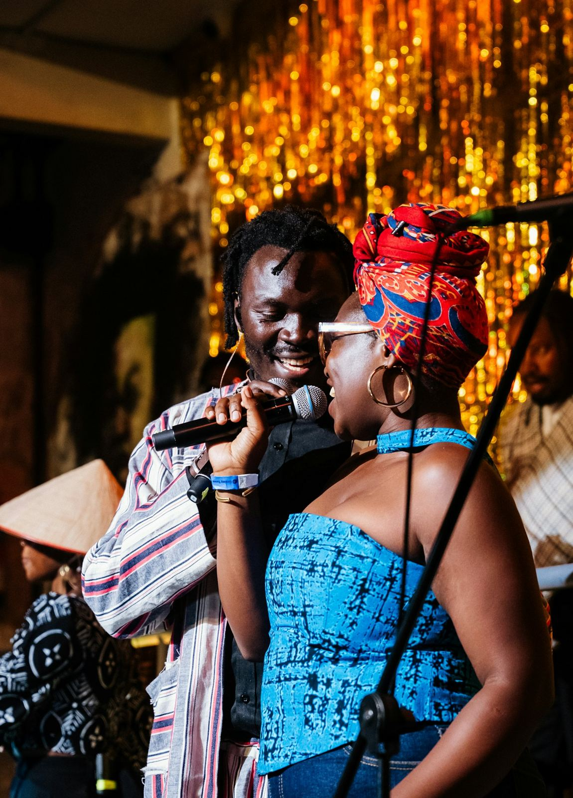

Tous les dimanches, 11 h – 15 h
Afro Brunch du dimanche
Un brunch généreux aux saveurs africaines : beignets, plantain, œufs, grillades, fruits frais, bissap et gingembre à volonté.
15 000 FCFA / pers.Réserver
Le dimanche, on brunche. Une fois par mois, on danse. Et toute l'année, le Boko's accueille vos fêtes.
Un brunch généreux aux saveurs africaines : beignets, plantain, œufs, grillades, fruits frais, bissap et gingembre à volonté.

Musique live, menu dégustation et cocktails signature : l'Afrique en fête, à Okala.

Menu personnalisé, décoration aux couleurs de l'Afrique et service dédié, jusqu'à 60 invités.
Programme des soirées annoncé sur Instagram @boko.slbv.
Anniversaire, baptême, pot de départ, séminaire : nous composons un menu africain à votre goût et décorons la salle à vos couleurs.
Réservez en ligne ou par téléphone au 066 08 87 08. Les groupes et l'Afro Brunch se réservent à l'avance.